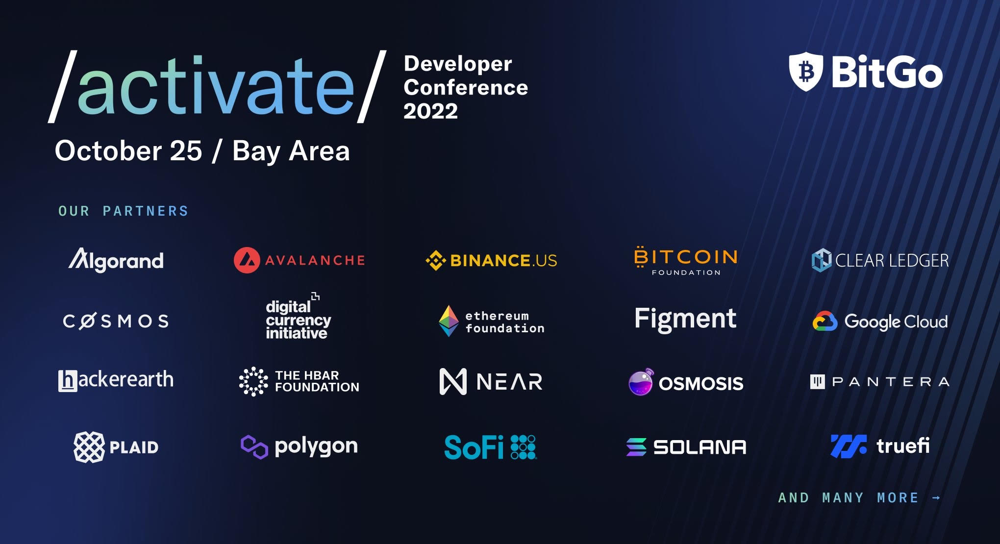

Activate: BitGo Developer Conference 2022
Activate is the world's premier multi-chain developer conference hosted by BitGo. Attending Activate as part of the BitGo team was an absolute thrill. Unlike previous tech conferences where I was an attendee, this time I was at the heart of the action, helping to orchestrate an event dedicated to inspiring developers and advancing blockchain technology. From the moment I stepped into the Computer History Museum in Mountain View, the buzz of innovation and excitement was undeniable.
One standout moment was seeing the innovative discussions and sessions led by experts like our CEO, Mike Belshe. These sessions delved into blockchain advancements and the evolving fintech landscape. A particularly exciting highlight was the public release of Harbor, the web3 wallet our team helped secure. Harbor is designed for EVM and Solana blockchains, focusing on DeFi and NFTs, and it was incredible to see it finally unveiled.
Being part of Activate 2022 was more than just work; it felt like contributing to a groundbreaking movement in blockchain technology. The hands-on workshops and inclusive atmosphere underscored our mission to empower developers and foster innovation. Huge shoutout to everyone who made this event possible. Joining other developers passionate about cryptography, distributed systems, and the future of money was truly inspiring.